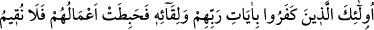
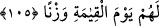

çalışmaları beğenirler.
Âyette bid‘at, fısk, riyâ ve şöhret ehline işaret vardır. Riyânın azı da şirktir. Şirk ise
ameli yok eder. Nitekim Allah Teâlâ şöyle buyurur: “Andolsun, eğer (Allah’a) ortak
koşarsan amelin boşa çıkar...” (ez-Zümer, 39/65). İşte bunlar, îtikadda bid‘atlar
uydururlar ve amelleriyle gösteriş yaparlar. Dolayısıyla bid‘at ve riyânın vebâli sadece
kendilerine döner.
Sonuç olarak küfürle yapılan amel, ibâdet ve tâat bile olsa bâtıldır. Yine gizli şirke
(şirk-i hafî) bulaşmış amel de, aslında tâat olsa da günaha yakınlığı sebebiyle
reddedilir. İşte buna binâen bizâtihî günah olup da tâat zannıyla işlenen amelin
durumunu sen düşün. Riyâ, süm‘a ve bid‘at ehlinin ameli ile yaptığı iyiliğe
yaratılanlardan şükür ve karşılık bekleyen kimselerin durumu da böyledir. Kendilerini
manastırlara hapsedip nefislerini meşakkatli riyâzatlara zorlayan rahipler de her hangi
bir şey üzerinde değildirler.
Eğer bu diyarda senin için ihlas kökü/temeli yoksa
Bu kapıda senden daha mahrumu yoktur
Bir kimsenin elbisesi temiz, sîreti kötüdür
O kimse için cehennemin kapısına kilit gerekmez
Hz. Ali (r.a.)’dan rivâyet edildiğine göre bunlar, Kûfe’nin bir kasabası olan Harûrâ
halkıdır. Onlar Hz. Ali (r.a.) ile savaşan Hâricîlerdir. Nitekim et-Tekmile’de böyle
denilmektedir. Hâricîler, Kûfe zâhidlerinden bir topluluktur. Hz. Ali (r.a.)’ın Mûaviye
ile aralarında vuku bulan hakem hâdisesi sırasında onun itaatından çıkmışlar ve: “O,
tahkîme râzı olmakla küfre girmiştir. Hüküm ancak Allah’ındır.” demişlerdir. Bunlar on
iki bin kişiydiler. Hz. Ali (r.a)’a karşı geldiler, ihtilaf bayrağını diktiler, kan döktüler.
Hz. Ali (r.a.) onların karşısına çıkarak geri dönmelerini istedi. Onlar ise savaştan
başkasını kabul etmediler. Bunun üzerine Hz. Ali (r.a.), Nehrevân’da onlarla savaştı ve
köklerini kazıdı. Pek azı müstesna kurtulan olmadı. Rasûlullah (s.a.)’in şu hadisi onlar
hakkındadır: “Benim ümmetimden bir kavim çıkar. Sizden biriniz kendi namazını
onların namazlarının yanında, orucunu onların oruçlarının yanında küçük görür.
Fakat onların îmanları köprücük kemiklerini geçmez.”[223] Yine Efendimiz (a.s.) şöyle
buyurmuştur: “Hariciler cehennem köpekleridir.”[224] Şerhu’t-tarîka’da böyle
geçmektedir.
105. İşte onlar, Rablerinin âyetlerini ve O’na kavuşmayı inkâr eden, bu yüzden